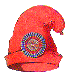

<div class="ui raised segment mainbox ">
  <div class="ui secondary menu">
    <a class="item" routerLink="/culottelist">Culotte List</a>
    <div class="right menu">
      <a class="item" routerLink="/about">About</a>
    </div>
  </div>
  <router-outlet></router-outlet>
</div>
